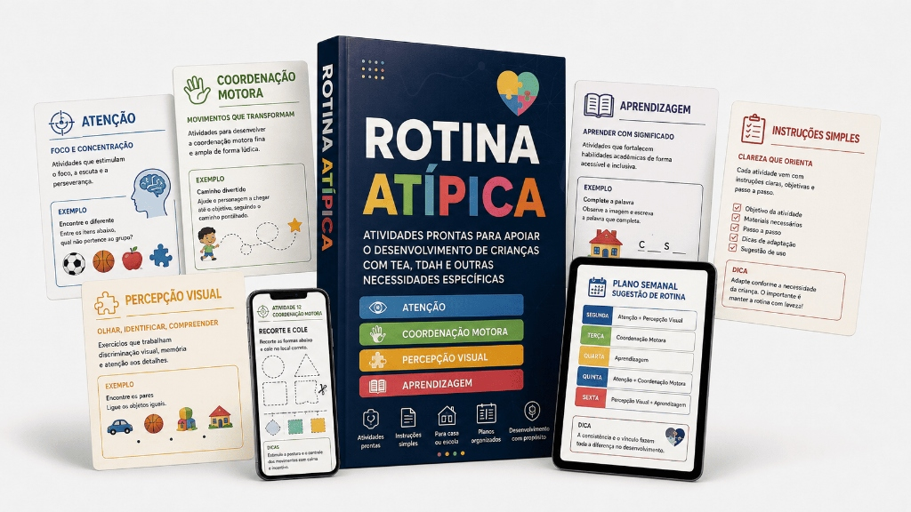

Tenha atividades prontas para apoiar o desenvolvimento de crianças com TEA, TDAH e outras necessidades específicas — trabalhando atenção, coordenação motora, percepção visual e aprendizagem, com instruções simples e planos organizados para aplicar em casa ou na escola.
Para quem deseja uma rotina leve em casa, reduzindo o tempo de tela e aplicando atividades organizadas de 10 a 15 minutos sem estresse.
Para profissionais que acompanham crianças neurodivergentes e querem ter um acervo diversificado e pronto para usar nas sessões clínicas.
Para quem atua na educação inclusiva ou AEE e precisa de recursos adaptados prontos para imprimir e aplicar com os alunos.
Passa a noite procurando atividades em PDFs soltos, mas nunca sabe qual escolher ou por onde começar.
Imprime tarefas que estão difíceis demais (causando crise e frustração) ou fáceis demais (que a criança abandona em 2 minutos).
Quer reduzir o tempo de celular e TV do seu filho, mas não tem uma alternativa prática de 10 minutos para entreter e desenvolver.
Tem centenas de PDFs baixados no celular ou computador, mas perde tempo tentando achar a atividade certa na hora de usar.
Materiais complementares desenvolvidos para acelerar os resultados da criança e facilitar o seu dia a dia.
Organização da rotina semanal, controle de estímulos sensoriais, acompanhamento de consultas médicas e registro de evolução pedagógica.
120+ fichas ilustradas para recortar e plastificar. Inclui passo a passo do banho, tarefas diárias, sentimentos e quadro de rotina.
Manual ilustrado em 5 passos para pais e professores aprenderem a desescalar crises (meltdowns), gerenciar birras e contornar recusas.
Exercícios de preensão de lápis, alfabeto sensorial, associação de imagem-palavra e vogais adaptadas para aplicação sem estresse.
Você nunca mais vai ficar em dúvida sobre como aplicar. Antes de baixar, você tem em mãos:
Atividade: Jogo das Sombras
Objetivo: Percepção visual e discriminação de contornos.
"Finalmente parei de me sentir perdida! Entrar no app e filtrar por 10 minutos facilita demais a nossa rotina. O Gabriel ama o Jogo das Sombras!"
"Economizou horas do meu planejamento semanal. As fichas com 'como facilitar' me ajudam demais nas intervenções em sala de aula."
"O caderno adaptado para TDAH foi o único que segurou a atenção do meu filho sem causar irritação. O material vale muito mais!"
Pagamento único • Sem mensalidades • 🔥 Preço promocional por tempo limitado!
Para quem busca apenas o kit básico de materiais
O pacote definitivo com Fichas Pedagógicas + Bônus
Teste a biblioteca Rotina Atípica por 7 dias. Se por qualquer motivo você achar que o material não facilitou sua rotina, basta enviar um único e-mail e devolveremos 100% do seu dinheiro. Sem perguntas e sem complicações.
Após a confirmação do pagamento, você recebe imediatamente no seu e-mail os dados para acessar a Área de Membros.
Não! É taxa única com acesso vitalício a todo o conteúdo atual.
Sim! Os materiais atendem tanto famílias para aplicação em casa quanto educadores e profissionais de AEE/Psicopedagogia.
Sim! Todos os materiais estão em alta resolução no formato PDF prontos para baixar e imprimir quando quiser.